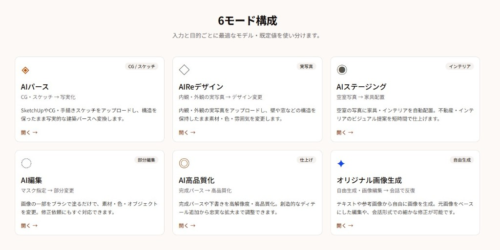
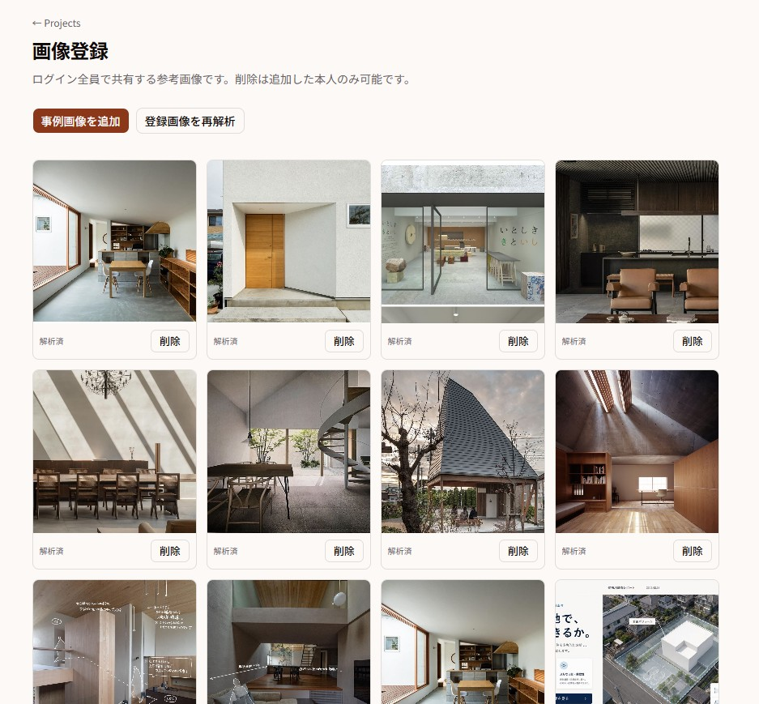
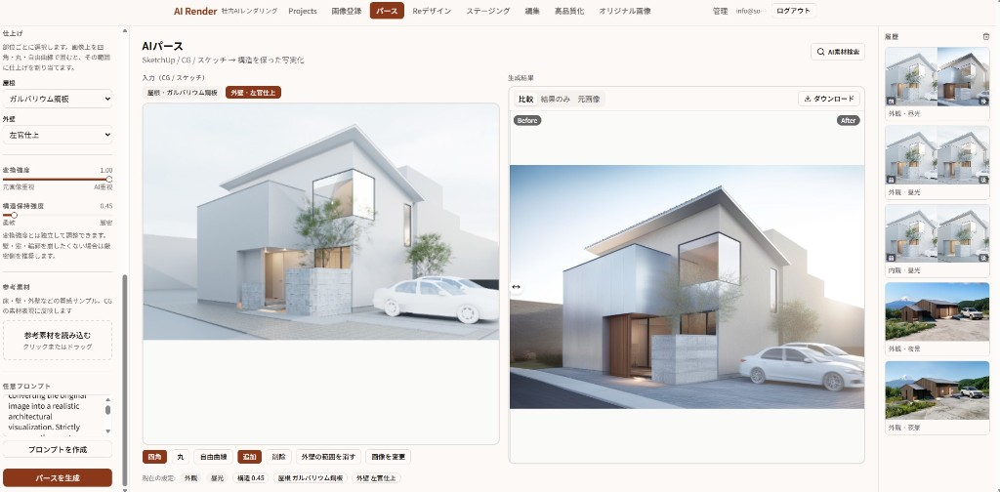
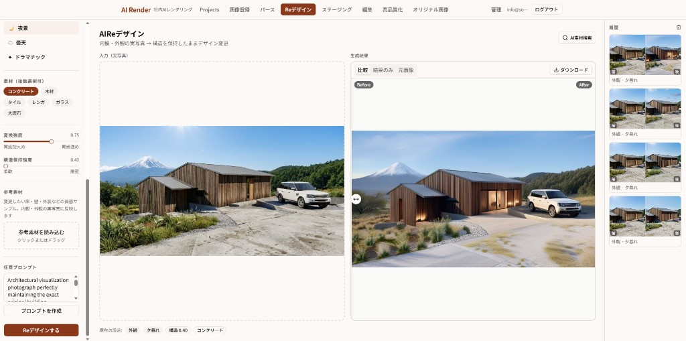
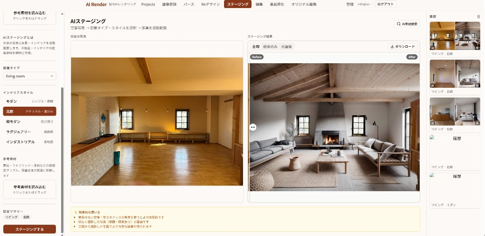
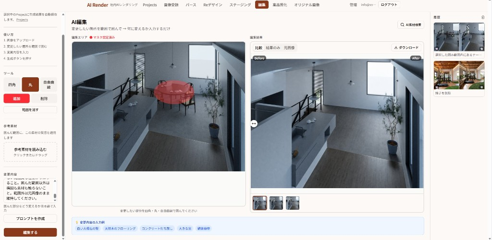
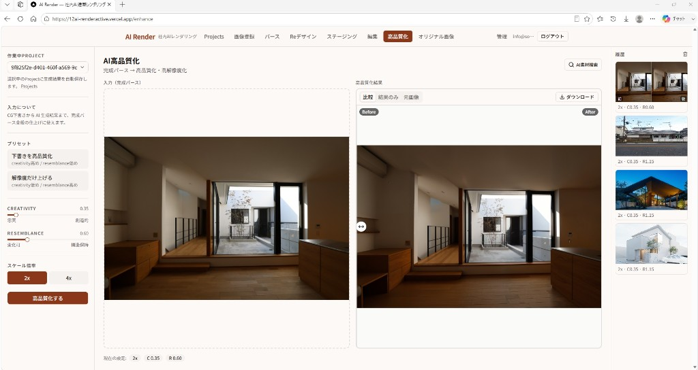
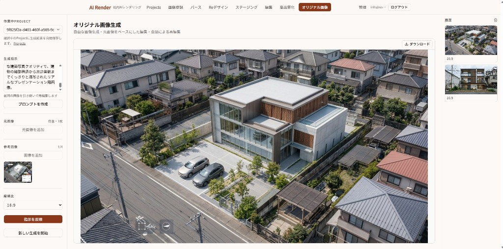

作ったもの
ツール概要
建築・インテリア向けの社内専用 AI レンダリングツール。CG・スケッチ・実写真をアップロードするだけで、写実的なパースの生成・素材変更・家具配置・部分編集・高品質化を行える。プロジェクト単位で履歴を管理し、チームで共有できる。
トップページ
6 モード構成 — 用途ごとに最適化されたツールを直接選択

画像登録（スタイルライブラリ）
チーム共有の参照画像ライブラリ — AI 解析済みで各ツールからそのまま参照可能

AI パース
SketchUp / CG / スケッチ → 構造を保った写実化

AI Re デザイン
実写真 → 素材・色・雰囲気を変更（構造保持）

AI ステージング
空室写真 → 部屋タイプ・スタイルを選択 → 家具を自動配置

AI 編集
マスクで範囲を指定 → 変更内容を入力するだけで部分変更

AI 高品質化
完成パース → 高品質化・高解像度化

オリジナル画像生成
Gemini — テキスト・参考画像から自由に生成、会話形式で繰り返し修正

解決する面倒・課題
パース作成に時間がかかる
外部サービスや専門オペレーターに依頼すると数日〜数週間待ちになる。社内で即時に生成できる環境がなかった。
コストが高い
1 枚あたりの外注コストが大きく、提案段階での試行錯誤に使いにくかった。
修正のたびに依頼が必要
素材や色味を少し変えたいだけでも再依頼が発生し、スピード感を持って提案できなかった。
ノウハウが属人化する
AI ツールは個人アカウントや個別契約で使われており、プロンプトや生成結果が共有されず蓄積されなかった。
打ち合わせごとの再提出に時間がかかる
打ち合わせでその場に依頼された修正を 1 週間後に再提出するサイクルを、AI でその日のうちに短縮する。
CG・生成結果が社内に蓄積されない
生成履歴・参照画像・プロンプトをプロジェクト単位で蓄積し、CG を社内資産として AI を継続的に育てる仕組みを持つ。
作りたいと思った理由
きっかけ
レンダリングにかける時間にいつもタイムラグがある。打ち合わせで依頼を受けてから提出まで数日〜1 週間かかることが常態化しており、提案スピードがボトルネックになっていた。
目指したこと
AI レンダリングは元画像を崩しすぎる問題がある。また一般的な AI レンダリングソフトは汎用性が高すぎるため、自社の作風とはかけ離れた画像が出てしまい「いかにも AI」な印象になりやすい。自社の作風に近く、現実的な範囲の中での生成を目指した。
工夫したポイントと苦戦したポイント
工夫したポイント
プロンプト自動最適化
ユーザーが入力したキーワードを AI（OpenAI）で建築向け英語プロンプトに自動変換し、専門知識がなくても高品質な結果を出せるようにした。
ツール共通レイアウト
全 6 ツールで共通レイアウトを共有し、履歴パネル・プロジェクト選択・スタイル参照ピッカーを一元化。追加コストを最小化した。
スタイルライブラリ連携
蓄積した参照画像を AI 解析してタグ付けし、各ツールの素材検索から呼び出せる仕組みを設けた。
社内用として育てられる設計
生成履歴・プロンプト・スタイルライブラリをプロジェクト単位で蓄積できる設計にした。使えば使うほど社内の好みやノウハウが資産として積み上がる。
AI 画像検索チャットボット
各モードに AI 画像検索チャットボットを組み込み、その場で必要な素材をインターネットから検索できる。さらに使用許可の有無でフィルタリングし、ライセンスが確認できた画像のみを拾えるようにした。
苦戦したポイント
生成品質のばらつき
モデルや ControlNet の設定によって同じ入力でも結果が大きく変わり、安定した品質を出すためのパラメータ調整に時間がかかった。
認証・権限管理
Supabase RLS と Next.js ミドルウェアの組み合わせで、管理者招待・プロジェクトメンバー制御を実装するのが複雑だった。
マスクキャンバスの実装
Canvas API を使ったブラシ描画と画像レイヤー合成で、座標変換や拡大縮小の処理に苦労した。
補足資料 — 6 モードに分けた理由と AI の特徴
説明資料用
なぜ 6 モードに分けたか
入力素材の種類と目的の組み合わせによって、最適な AI モデルが根本的に異なる。同じ「パース生成」でも CG/スケッチと実写真では使うべきモデルと構造保持の仕組みが変わるため、モードを明確に分離した。また「全体を変える操作」と「部分だけ変える操作」、「アップスケール」「自由生成」はアーキテクチャが別物なので、統一 UI の裏側で 3 つの AI プロバイダー（Replicate / OpenAI / Gemini）を使い分けている。
入力が CG / スケッチ
ControlNet で輪郭・奥行きを検出し、構造を保ちながら写実化する
入力が実写真
実写専用モデルで壁・窓の構造を保ちつつ素材・雰囲気を変更する
部分変更 / 自由生成
OpenAI inpaint（マスク）または Gemini マルチモーダルで対応する
入力
SketchUp・CG・手書きスケッチ / 内観・外観 / 部位仕上げ指定
使用 AI
Replicate SDXL + ControlNet（Canny 輪郭 × Depth 奥行き）
特徴
- 構造保持が最強（structureScale 既定 0.92）
- 3 バリアントを同時生成
- 部位ごとに素材・仕上げを選択可能
入力
内観・外観の実写真 / 素材・ライティング・強度指定
使用 AI
内観: interior-design-sdxl（Depth + ProMax）/ 外観: SDXL + ControlNet
特徴
- 壁・窓などの構造を保ちながら素材変更
- 内観と外観でモデルを自動切り替え
- 3 バリアントを同時生成
入力
空室写真 / 部屋タイプ（6 種）/ スタイル（北欧・モダン・和モダンなど）
使用 AI
Replicate adirik/interior-design（家具配置専用モデル）
特徴
- 家具・インテリアの配置に特化したモデル
- スタイルプリセットで雰囲気を一発切り替え
- guidance_scale 15（家具密度を高く維持）
入力
任意の画像 + ブラシマスク（四角・丸・自由曲線）+ テキスト指示
使用 AI
OpenAI gpt-image-2（Inpaint）— 高品質・高精度
特徴
- マスク外は完全保持、マスク内のみ変更
- 他モードの後処理としても内部利用
- 3 バリアントを並列生成
入力
完成パース・下書き画像のみ（テキスト指示なし）
使用 AI
Replicate clarity-upscaler（2x / 4x アップスケール）
特徴
- creativity（創造性）と resemblance（忠実度）をスライダーで調整
- プリセット: 下書き強化 / 解像度のみ
- 他モードの最終仕上げとしても使用
入力
テキスト（必須）+ 元画像・参考画像（最大 5 枚）+ アスペクト比
使用 AI
Google Gemini（gemini-3.1-flash-image）— マルチモーダル
特徴
- 構造保持の制約なし、完全な自由生成
- 会話履歴を引き継いで反復修正が可能
- 元画像ベースの編集にも対応
補助 AI（全モード共通）
プロンプト自動整形
Gemini が日本語キーワードを建築向け英語プロンプトに自動変換。専門知識がなくても高品質な結果が得られる。
素材 Vision 解析（AI 素材検索）
GPT-4o-mini が参考画像から質感・素材フレーズを抽出。スタイルライブラリとの連携で社内蓄積の参照画像をそのまま活用できる。